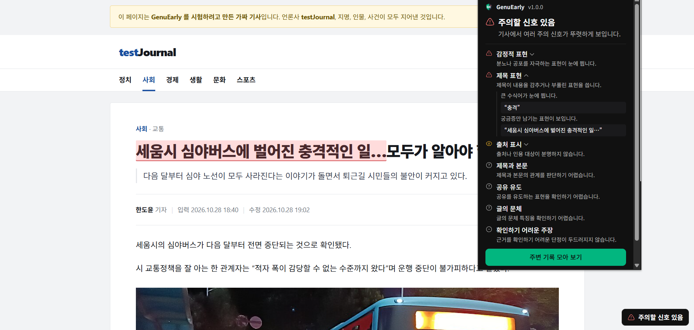
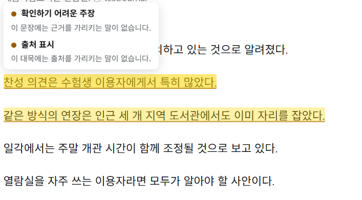
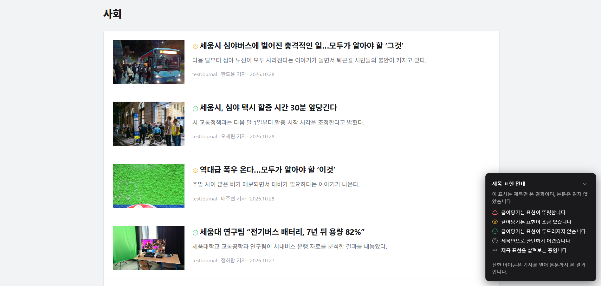
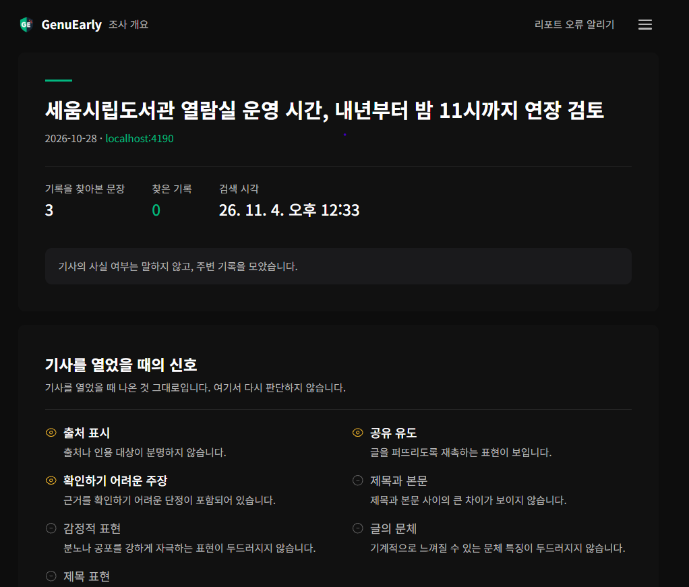

크롬 확장 프로그램
다 읽고 의심하면
늦습니다
기사를 연 그 순간에 확인해 볼 점을 짚어 드립니다. 제목 하나 판정에 0.5~1.5초.
참·거짓은 말하지 않습니다. 판단은 사용자가 합니다.

읽는 동안,
넘기기 직전에
다섯 자리에서 끼어들되, 어디서도 막지 않습니다.
01
열면 바로 배지
오른쪽 아래에 네 단계로 뜹니다. 판단 보류는 실패가 아니라 결과입니다.
안심눈에 띄는 신호가 없습니다
확인 권장확인해 볼 점이 있습니다
주의신호가 여럿 겹칩니다
판단 보류판단할 만큼 분명하지 않습니다
02
걸린 대목에 형광펜
걸린 그 문장에 칠합니다. 올려놓으면 왜 칠했는지 뜹니다.

03
목록에선 낚시성 제목만
제목 옆에 작은 표시가 붙습니다. 감추거나 부풀리는지 하나만 봅니다.

04
드래그한 글도,
공유 직전에도
드래그한 글을 오른쪽 클릭으로 검사합니다. 공유 직전에 한 번 알리되 막지는 않습니다.

05
한 기사가
전하지 못하는 것
같은 사안의 주변 보도를 모아 견주어 드립니다. 뒷받침하는 것과 어긋나는 것을 함께 찾습니다.

세 번이면 끝납니다
- 1
기사를 엽니다
따로 누를 것이 없습니다.
- 2
배지를 봅니다
몇 초 안에 뜨고, 걸린 대목은 본문에 칠해집니다.
- 3
직접 판단합니다
자세히는 확장 아이콘, 주변 보도는 리포트.
하지 않기로 한 것
제품의 전제입니다. 어기면 만들 이유가 없어집니다.
진위를 단정한다
확인해 볼 신호가 있는지를 알려 드립니다
공유를 막는다
알림만 띄웁니다. 공유는 사용자가 합니다
모르는데 아는 척한다
확신이 낮으면 판단 보류라고 말합니다
언론사를 평가한다
그 기사의 글에서 보이는 것만 봅니다
동의 없이 데이터를 보낸다
보내는 것이 없습니다
AI는 역할을
나눠 씁니다
판정은 하나가 합니다. 넷이 각자 판정하면 서로 어긋납니다.
Jev
기사·제목·문장을 판단합니다
글을 한 글자도 쓰지 않습니다
ChatKHU
사용자가 읽는 모든 문구와 아이콘
판정하지 않습니다
sonar-pro
리포트의 주변 기록을 찾아옵니다
참·거짓을 선언하지 않습니다
코드
점수 합산과 단계 결정, 생성물 거르기
모델에 맡기지 않습니다
모두 ChatKHU API 게이트웨이를 거칩니다. 실행 중 생성되는 한국어는 리포트 요약 한 문단뿐입니다.
남는 것은
셋뿐입니다
판단 캐시
주소의 해시와 점수만
6시간보고 있는 리포트
브라우저를 닫으면
사라짐리포트 보관함
제목과 주소. 20건까지
30일API 키는 중계 서버에만 둡니다. 확장 프로그램에는 넣지 않습니다. 보안 설계 보기